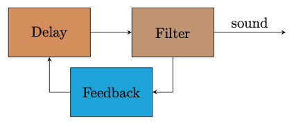

Interacting with Feedback
1: Single slider exploration
This slider controls a filter in the feedback loop. In this example, the response still feels relatively straightforward: if you put the slider in a given place you tend to hear a given frequency. Already there are a few interesting features however:
Notes
- Although the filter is varied continuously, the tone latches on to particular regularly spaced tones. These are in fact harmonics relative to the delay time in the feedback loop.
- The tone may take a while to settle to a particular harmonic, sometimes as long as 5-10 seconds. See if you can find zones where even after you leave the slider in one place, the sound evolves continues to change.
- It is possible for a particular slider position to cause different sounds at different points in time. You can try this out by approaching the centre point slowly from either above or below and listening to the difference. This property is called HYSTERESIS and is very important for feedback interactions.
Diagram
